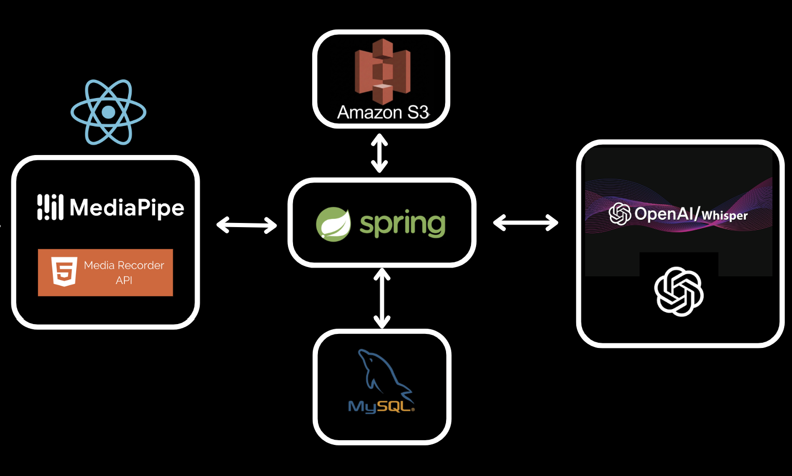

관심 영역
- 백엔드 API 설계
- 데이터베이스 모델링 및 SQL 최적화
- 트랜잭션 처리 및 데이터 정합성
- Docker 기반 배포 환경 구축
Backend Developer Portfolio
데이터 흐름과 안정적인 시스템 구조를 고민하는 백엔드 개발자입니다.
컴퓨터공학 전공을 바탕으로 백엔드 개발과 데이터베이스 설계 역량을 쌓아왔습니다. 기능 구현에 머무르지 않고 요청이 처리되는 흐름, 데이터 정합성, 예외 상황을 함께 고려해 안정적인 서비스를 만드는 데 관심이 있습니다. 협업 과정에서는 구조와 결정 근거를 기록하고 공유하는 문화를 중요하게 생각합니다.
문제를 명확히 정의하고, 팀이 이해하기 쉬운 구조와 기록을 남기는 개발자
프로젝트에서 다뤄본 구조와 문제 해결 경험을 기준으로 정리했습니다. 기술 스택보다 요청 흐름, 데이터 정합성, 배포 흐름에서 어떤 고민을 했는지에 초점을 맞췄습니다.
Java · Spring Boot · Spring Data JPA · Hibernate · MyBatis
MySQL · Redis
Docker · Docker Compose · Nginx · AWS EC2
React · Vite
Git · GitHub · Notion · Mattermost
Whisper 및 GPT 기반 AI 면접 분석 · 피드백 서비스
DADAP은 CS 면접과 포트폴리오 면접을 반복 연습하고, 답변 분석 결과와 피드백, 꼬리질문으로 다시 복기할 수 있도록 만든 AI 면접 분석 플랫폼입니다.


이 프로젝트의 핵심은 AI 분석 기능 자체보다, 장시간 외부 AI 요청이 포함된 처리를 어떻게 서버 구조 안에서 안정적으로 다룰 것인가였습니다.
QUEUED / RUNNING / DONE / FAILED 로 설계202 Accepted 반환 후 백그라운드 작업으로 분리병목 원인이 단순 AI 지연이 아니라 동기 처리로 인한 스레드 점유와 대기열 누적에 있음을 확인했고, 비동기 처리 구조 도입 후 서버 안정성과 처리 흐름을 개선할 수 있었습니다.
AI 분석 API 응답 시간 개선
동일 조건 부하 테스트 기준 처리량 개선
전체 영상 분석 흐름 시간 단축

Client 요청을 API Server가 즉시 접수하고, Async Worker가 AI API 호출과 상태 업데이트를 분리 처리하는 구조로 설계했습니다.
개인 또는 팀 프로젝트 정리 영역
실제 화면 이미지가 생기면 왼쪽 영역을 스크린샷으로 교체하고, 구현 내용과 트러블슈팅을 아래에 추가하면 됩니다.